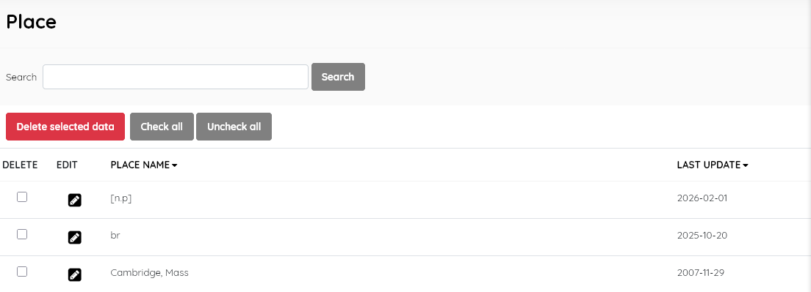
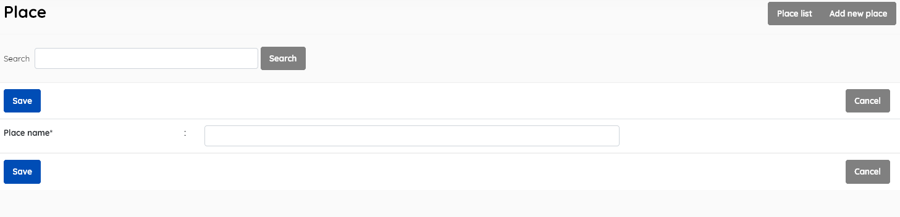
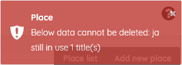

This look-up table contains the authoritative list of places of publication used in the catalogue.
This function enables management of the place master-file. It displays the list of places of publication ( e.g Chiang Mai, Thailand ; Brisbane, Australia etc. ) in the lookup table , with data for:

If you wish to edit an entry you must select it , click the little edit pen button, and then on the resulting screen also click the EDIT button to enable editing. It’s a type of “safety mechanism”.
A search function allows you to search for entries by place-name keywords.
Results can be sorted by clicking on the field name at the top of each column.
This provides the facility to add places directly to the data in the Senayan system. Places’ information includes the fields listed above, with the exception of Last updated, which is done automatically when the Save button is clicked.

Adding a place to the master-file can also be done during the cataloguing data input if the place is not found during the place data input for a new title.
SLiMS does not translate master file entries.
A place must be selected first, and after clicking the DELETE SELECTED DATA button a requester will appear, asking for confirmation.
If the place is in use in any existing catalogue records, it cannot be deleted, and a notification will appear.

The layout and function of this module’s interface is similar to other master-file entry/management screens.
Notes:
Copy-cataloguing from Library of Congress may introduce strange two or three letter codes, which represent just the country code in MARC (see https://www.loc.gov/marc/countries/countries_code.html)
Such entries will require manual editing.
The place of publication name should reproduce the place of publication as given on the title page or in other bibliographic data ( e.g C.I.P) provided by the resource.